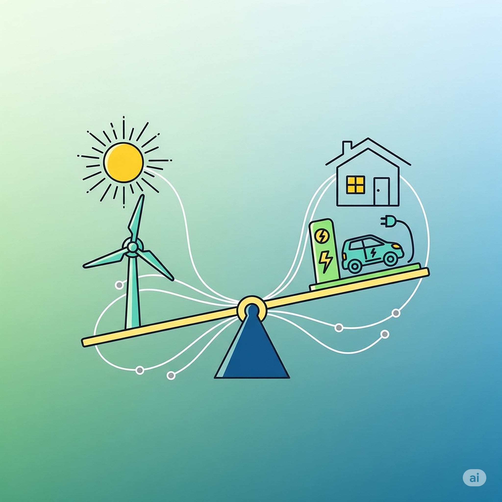
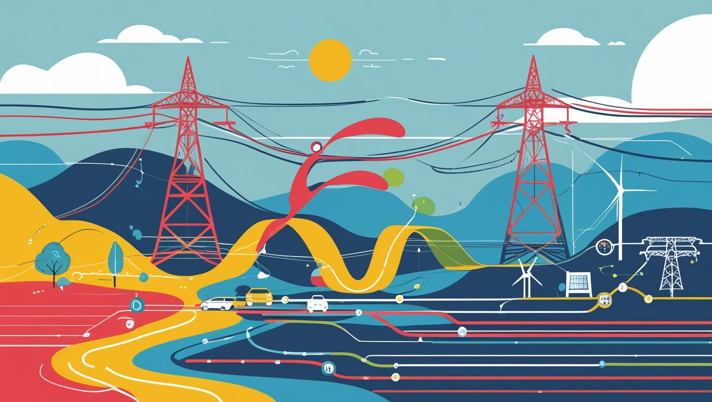

What is Energy Flexibility, and why should you care?
Energy flexibility means the ability to adjust power generation and demand, so that they match exactly.
It is going to be a big topic in the following years, and it is very likely to impact our comfort, our wallets, but also our climate.
Grid’s balancing act
The electricity we use has been produced less than few seconds ago by Sun’s light hitting some panels, steam from natural gas being burned and boiling water, wind blowing some propellers. Electricity is not like petrol – there are no tanks to store it.
Renewables are cheap, sustainable, but inconsistent: sun doesn’t shine at night, wind doesn’t always blows the way we want it. Demand for electricity is not constant, either: hot days require more AC, 6pm is when everyone wants to cook their diner in the oven.
Yet we always need to match it with production, every millisecond.

An invisible miracle
We don’t think about it, but it is a real miracle that every time we press that switch, the light turns on.
The energy industry has been always struggling to match demand and production. But now it’s even harder: in the past if the demand was up, you put some more coal on the fire, but now you can’t ask the Sun to shine brighter at 7pm in December.
If you need to match them, there are really two ways to do it: One is to have some storage that you fill up when you have some surplus and use it later. The other one is to convince consumers to change their behaviour to match your production profile.
Solution A: grid-scale storage and its hurdles
The first one, energy storage, is hard. Electricity can be used to charge batteries when the sun is shining and discharge them when we’re back and cook our dinners. But batteries are expensive; very expensive. Scientists and engineers try to work around this with storing electricity as other forms of energy – thermal (by melting salt), mechanical (spinning heavy flywheels), or gravitational (pumping water uphill).
A more efficient way to do this efficiently is to repurpose some batteries that are generally used for something else to bridge the gap in between the sunny afternoon and the evening need for electricity.
Vehicle to grid, a powerful untapped resource
We have these batteries in the increasing fleet of electric vehicles. The concept is called Vehicle to Grid (V2G). V2G allows electric vehicles to not only draw power from the grid but also send electricity back, helping to stabilise the grid and potentially providing financial benefits to owners. Your car might “buy” electricity, store it for a few hours at noon and “sell” back it for a profit in the evening.
They don’t look like much, but car batteries are quite mighty – they store 40-80 kWh of energy. The average electricity use for a household is about 10 kWh per day. So a full charge can cover the needs for up to a week, if you don’t drive too much.
Don’t get too excited; not all the electric cars have V2G capabilities. In fact, most of them don’t, including the new ones, notably Teslas. I hope those rumours that Teslas do have the equipment, but it is disabled by software is true, because this would mean it’s feasible to be done with very low cost.
I am cautiously optimistic and excited about this, because I think it is a great way to save millions of tons of emissions every year. I hope it will be another reason for some to renew their car with an electric one. And, this one is already happening, will encourage innovative financial models for green energy. E.g. Octopus Energy offered a “cheaper than the usual” EV leasing that offers the car for rent plus free charging at home if you keep your car plugged in for 12 hours a day 20 days a month. Opportunities are limitless.
I am concerned as I don’t know if V2G doesn’t accelerate battery degradation, with significant environmental and economic consequences, but Octopus betting on it is a good sign.
Societal and Political Impact
There is also the geopolitical impact of becoming dependent on Chinese technology. Not only that China is the main provider of critical minerals, but they are also way ahead of the West in regard to manufacturing of batteries, which could prove a serios supply chain vulnerability for the West.
China currently dominates the processing of critical minerals and the manufacturing of batteries. This creates a significant supply chain vulnerability for the West.
There is also the social impact of this transition that I still cannot understand. It is a capital intensive one, and it is very likely to profit the rich much more than it profits the poor. It’s not Marxism; it’s mathematics. If the government doesn’t get involved, and the political climate is very much against regulations at the moment, we might see an energy feudalism becoming reality.

Solution 2: Shifting demand and dynamic pricing
This one, means convincing people and industry to use more energy when it’s available/clean and refrain from it at the other times.
Shifting demand, is difficult too. There are both technical and social challenges. I can charge the car at anytime, I can potentially pre-warm the house in January at noon, but I cannot program the washing machine to do a load 1pm to 3pm, because by the time I am home my clean t-shirts would stink. I don’t want to shower at 2 am, either. So there are some limits on how much I can shift.
One of the immediate effects that we’ll probably see is that the price we pay for a kilowatt hour will change every second. Very expensive at 6pm and close to free in July at 2pm.
Sounds confusing, irritating? In a way it is. But just like the airplane tickets, it might allow some inventive ways to save. It will create a market for storing cheap electricity and selling it at a profit. You and your neighbours might decide to get a battery together, or change the boiler for a heat pump to get free air condition in the hottest days.
Sources / resources
- The great balancing act: what it takes to keep the power grid stable
- Congress Must Address China’s Dominance in Critical Minerals, May 4, 2023
- Tesla quietly adds bidirectional charging capability for game-changing new features
- Carbon Intensity API
Illustrations with AI; Gemini 2.5 Pro and Canva.
Prompts used: “generate an image to illustrate the follwing article ; Illustrative, not informational, a very abstract [pasted content]” and “another one, landscape-oriented image with shapes and colors suggesting energy flexibility.”
Canva: Generate a stylized, abstract illustration for a LinkedIn article about energy flexibility. Depict the delicate balance between electricity generation and consumption using vibrant, contrasting colors and dynamic shapes. The image should convey the concepts of real-time matching, intermittent renewable energy sources (solar and wind represented symbolically), large-scale energy storage (perhaps as interconnected nodes or flowing energy streams), and Vehicle-to-Grid technology (subtle suggestion of electric vehicles interacting with a power grid). Focus on conveying abstract ideas of flow, connection, and dynamic equilibrium, avoiding literal representations of technology. Employ a modern, minimalist aesthetic with a clean, professional feel suitable for LinkedIn. Use a high-resolution format.
Originally published on LinkedIn